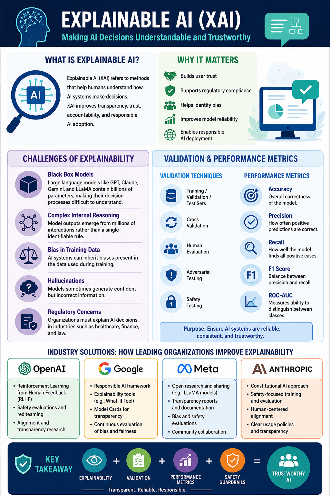

{kind=link}
Title
Explainable AI (XAI)
Portfolio Artifact | Workshop 4
An infographic and explanatory document focused on making AI decisions understandable, trustworthy, and measurable.

Artifact Information
Explainable AI (XAI)
PNG infographic with supporting Word document.
This artifact explains why AI systems need transparency, especially when large language models such as GPT, Claude, Gemini, and LLaMA can behave like black boxes.
To show how explainability, validation, performance metrics, and safety guardrails work together to make AI systems more reliable and trustworthy.
Black-box models, bias in training data, hallucinations, regulatory expectations, validation datasets, cross-validation, human evaluation, adversarial testing, accuracy, precision, recall, F1 score, and ROC-AUC.
The infographic connects XAI to practical needs in healthcare, finance, law, and other regulated settings where organizations must explain and evaluate AI-driven decisions.
PNG export, Microsoft Word, GitHub Pages, HTML, and CSS.
This artifact shows my ability to translate complex AI trust and evaluation concepts into a clear resource for non-technical and technical audiences.